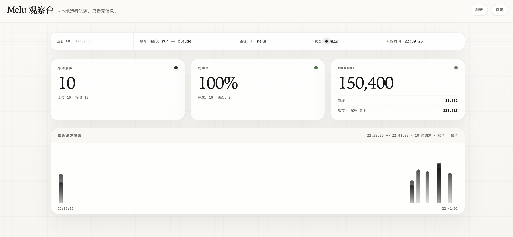
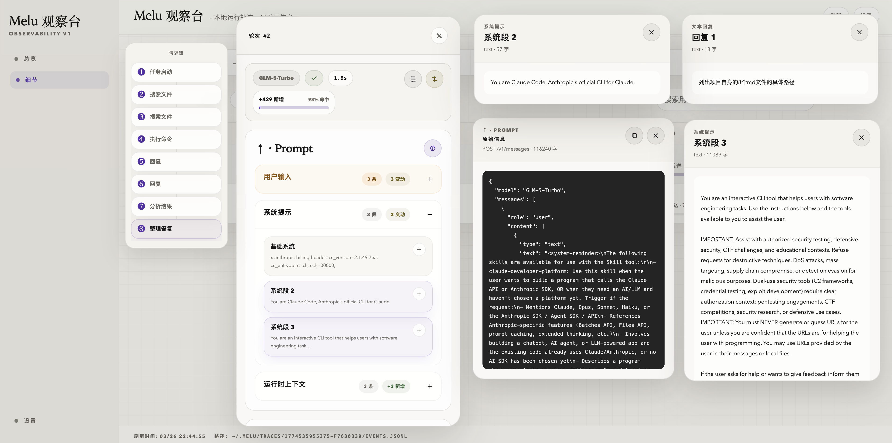
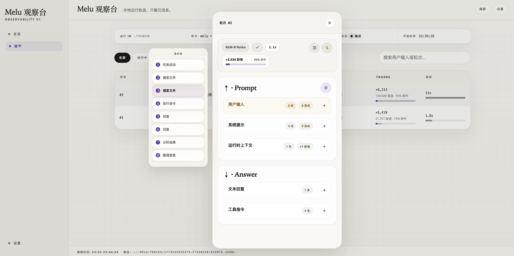
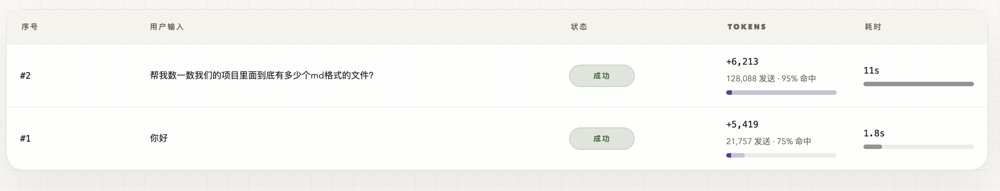
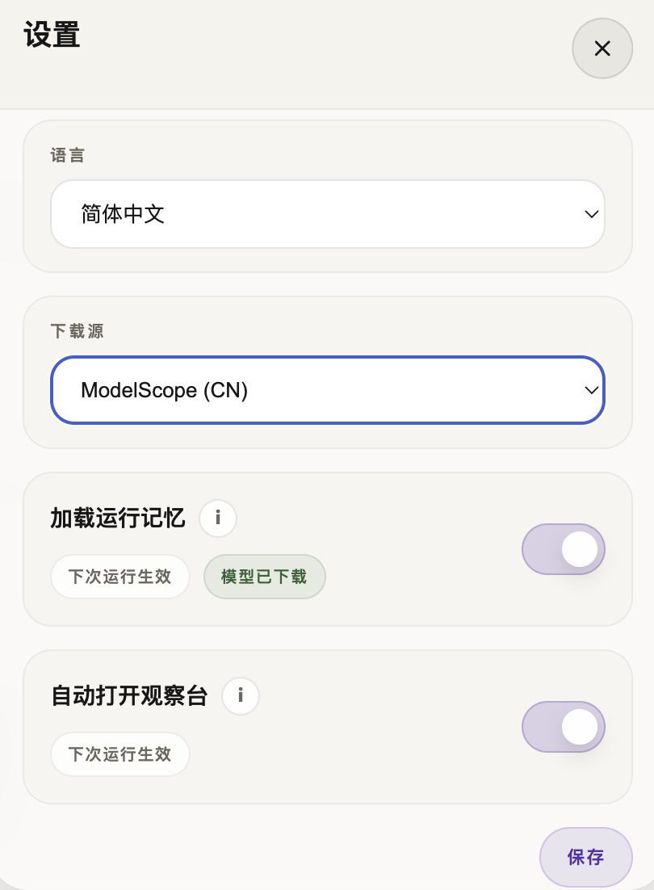

Melu 是一个运行在 Claude Code 与 Anthropic API 之间的本地代理。它让你直接看到每一轮请求发生了什么，并可选开启跨会话长期记忆。
观察台免费、开箱即用；长期记忆可随时开关，不影响代理本身的工作。
# Install globally
npm install -g @hope666/melu
# Initialize (choose memory on/off interactively)
melu init
# Start proxy + open dashboard
melu run -- claude
✓ Proxy started on localhost:9800
✓ Dashboard opened → http://127.0.0.1:9800/__melu
✓ Claude Code process started
你只能看到"发了 N 次请求"，却不知道 Claude Code 每一步在做什么、Prompt 怎么包装的、工具调用链路是什么。
每次重启 Claude Code，它都会忘记之前的讨论。你需要重复输入背景信息，浪费大量 Token 和时间。
标准的云端记忆往往不可控，用户需要一个本地化、透明且安全的记忆中间层。
观察台开箱即用，记忆按需开启
总览页直接看运行状态、请求量、成功率、Token 消耗；细节页逐轮展开查看 Prompt 包装方式与模型原始回复。所有数据完全本地。
不再只看"发了几次请求"，而是直接看 Claude Code 每一步在做什么：任务启动 → 搜索文件 → 执行命令 → 分析结果 → 整理答复。
每一轮的新增 Token、发送量、缓存命中率、耗时都能对照着看。适合排查"为什么这轮特别贵"或"为什么突然变慢"。
记忆模块可独立开关。开启后自动提取关键上下文并注入后续会话；关闭后 Melu 仍作为纯观察台运行，互不影响。
Embedding 模型本地加载，向量检索本地执行，Trace 数据本地存储。除 Anthropic API 外，无任何数据离开你的机器。
零侵入式架构，无需修改 Claude Code 源码或配置文件。一行命令启动，退出后自动还原。
每一个细节都触手可及，不再猜测 Claude Code 在做什么
总览页实时展示当前会话的请求量、成功率、平均延迟、Token 消耗，以及请求时间线。无需打开任何日志文件。


点开任意请求，查看上传给模型前的完整 Prompt 包装，以及模型返回的原始文本和工具指令。
↑ · Prompt 查看发给模型前的完整包装↓ · Answer 查看模型原始回复与工具指令不再只看"发了 N 次请求"。请求链视图完整还原 Claude Code 的工作流程，每个节点还可继续展开查看 Prompt / Answer 细节。


每一轮的新增 Token、发送量、缓存命中率、耗时都能并排对比，适合排查费用异常或响应变慢的根因。
不想用记忆？关掉即可，Melu 仍然作为纯观察台正常运行。想重新开启？一行命令，下次启动生效。

三个进程分工协作，对 Claude Code 的工作流完全无感
拦截 Claude Code 与 API 之间的通信，记录 Trace 事件，注入记忆（若已开启）。
实时展示请求链、Prompt / Answer 详情、Token 统计。每 1.5s 自动刷新，数据完全本地。
后台提取新记忆、向量化存储，队列清空后自动退出，不影响前台体验。（仅记忆开启时运行）
你 ↔ Claude Code ↔ Melu Proxy (localhost:9800) ↔ Anthropic API
│
├── SQLite 记忆库（可选）
├── Trace Dashboard (/__melu)
└── JSONL Trace 日志
melu init
# 初始化（交互式选择是否开启记忆）
melu run -- claude
# 启动代理 + 自动打开观察台
安装后，melu init 引导你完成初始化，melu run -- claude 一键启动代理并自动打开浏览器观察台。无需其他配置。
记忆功能是独立模块，随时可以切换。关闭后 Melu 仍然作为观察台和透明代理完整运行，不影响任何功能。
# 只想用观察台，不用记忆
melu config memory off
# 重新开启记忆
melu config memory on
# 关闭自动弹出观察台
melu config dashboard off
# 查看所有已存储的记忆
melu list
# 查看代理运行状态
melu status
# 停止后台代理
melu stop
通过 melu list、melu status、melu stop 掌控代理状态，随时查看记忆库内容或停止后台进程。
重度开发者
每天使用 Claude Code 处理大量代码，想直接看到请求链和 Token 消耗，了解 AI 到底在做什么。
多项目并进者
在多个仓库间快速切换，希望 AI 能够记住不同项目的特定规则，同时也能观察跨项目的请求差异。
隐私敏感团队
需要本地化、可审计的 AI 工具链。Melu 所有数据留在本机，观察台源码完全开放透明。
效率追求者
厌倦了猜测 Claude Code 的行为，或频繁重复输入背景信息。一个工具同时解决可观测性和记忆两个痛点。
Melu 的设计原则是"透明"。它不存储你的 API Key（仅通过环境变量传递），不将你的代码上传到除 Anthropic 以外的任何地方。所有 Trace 记录、记忆索引和 Embedding 向量都存储在本地。代码完全开源，可自行审计。
100%
本地数据
OSS
开源透明
Safe
隔离运行
Node.js 20+
推荐 Node.js v22.22.2 LTS 以获得最佳性能。
Claude Code
需已在全局安装 @anthropic-ai/claude-code 并完成登录。
600MB 磁盘空间（仅开启记忆时）
用于存储本地 Embedding 模型（Qwen3-Embedding-0.6B-Q8，约 600MB）。仅观察台模式无需此模型。
melu config memory off 后，Melu 会跳过记忆提取和注入，以纯透明代理 + 本地观察台的形式运行，不会下载 Embedding 模型，也不占用额外磁盘空间。
.claude/ 里的 CLAUDE.md、settings.json 等文件完全不受影响。
~/.melu/traces/<run_id>/events.jsonl，按 run_id 隔离，不会混淆多次会话的数据。观察台页面直接读本地文件，无任何外部服务依赖。
~/.melu/memories/ 目录。你可以手动备份，也可以将该目录放置在 iCloud / Dropbox 等同步盘中实现跨设备共享，或使用 melu export / melu import 命令迁移。